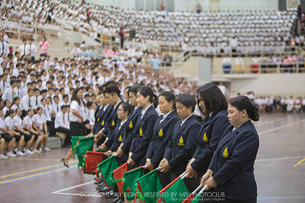

| CONTACT US 333 Moo.1,Thasud, Muang, Chiang-Rai 57100 Thailand +88-8565656 reviewmfu@gmail.com mrirw@thxs.com |
ใช้เพื่อการศึกษาเท่านั้น |
กิจกรรมชิงธงสำนักวิชาและธงมหาวิทยาลัยแม่ฟ้าหลวง
 เป็นกิจกรรมที่มีวัตถุประสงค์เพื่อมุ่งหวังให้เกิดความรัก ความสามัคคี การทำงานร่วมกันของนักศึกษาชั้นปีที่ 1 (เฟรชชี่) ต่อธงสำนักวิชาและธงมหาวิทยาลัยแม่ฟ้าหลวง ซึ่งทุกสำนักวิชาจะต้องหล่อหลอมร่วมใจเป็นหนึ่งเดียว ในการร้องเพลงประจำมหาวิทยาลัยเพื่อให้ได้ธงประจำมหาวิทยาลัย ซึ่งถือเป็นธงที่มีเกียรติสูงสุดของมหาวิทยาลัยแม่ฟ้าหลวง ภายในกิจกรรมจะประกอบไปด้วยนักศึกษาชั้นปีที่1 แต่งกายชุดถูกระเบียบ แต่ละสำนักวิชาจะต้องร้องเพลงมาร์ชมหาวิทยาลัยแม่ฟ้าหลวง โดยจะมีคณะกรรมการจากองค์การบริหารนักศึกษา ซึ่งจะทำการยึดธงสำนักวิชาไว้ทั้งหมดและอีก 1 ธง คือธงประจำมหาวิทยาลัย เมื่อร้องเพลงผ่านแล้วแต่ละสำนักวิชาจะได้ธงประจำสำนักวิชาคืนจนครบ แล้วให้นักศึกษาชั้นปีที่1 ทั้งหมดร่วมร้องเพลงมาร์ชมหาวิทยาลัยแม่ฟ้าหลวง เพื่อชิงธงประจำมหาวิทยาลัย เมื่อผ่านแล้วองค์การบริหารนักศึกษาจะมอบธงประจำมหาวิทยาลัยให้ พร้อมกับยอมรับว่าเฟรชชี่กลายเป็นนักศึกษาของมหาวิทยาลัยแล้ว สุดท้ายนักศึกษาชั้นปีที่1จะล้อมวงรอบธงทั้งหมด เพื่อบูมมหาวิทยาลัยแม่ฟ้าหลวงตามจำนวนรุ่นที่ได้รับปัจจุบัน
| CONTACT US 333 Moo.1,Thasud, Muang, Chiang-Rai 57100 Thailand +88-8565656 reviewmfu@gmail.com mrirw@thxs.com |
ใช้เพื่อการศึกษาเท่านั้น |